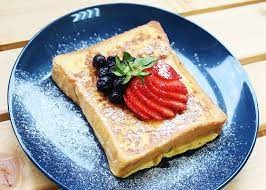

Penny's kitchen

Ingredients：
toast, milk, regular sugar, two egg, butter.
Recipe instructions
- Beat the eggs first, add milk and sugar, and stir until the sugar melts.
- Soak the thick slices of toast on both sides for about 3-5 minutes to allow the toast to soak up.
- Put the cream in the pot, add the soaked toast, and fry slowly over "medium-low heat" until golden brown on both sides.
- Place the fruit and honey on the plate, and finally sprinkle with powdered sugar to complete the "French toast".
- Finish!